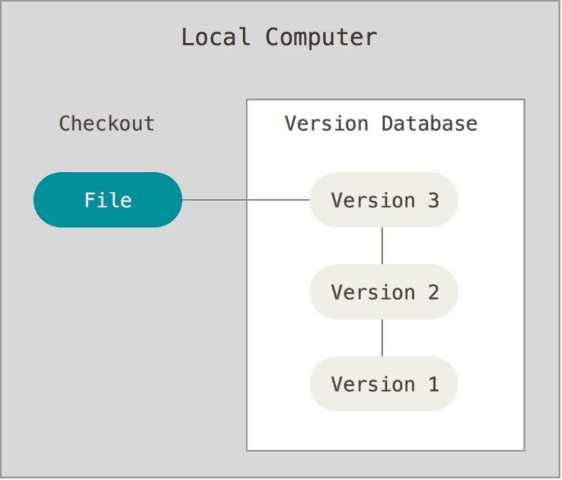
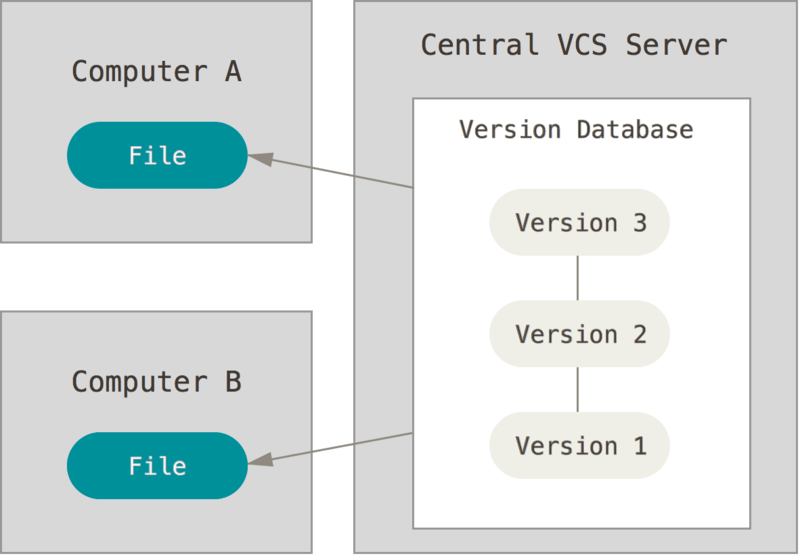
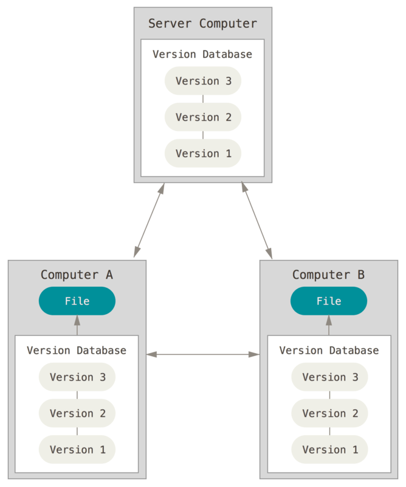

本文将聊一聊版本控制和版本控制系统。
版本控制
在大学的期间，我们会以团队的方式完成一项大作业，比如写一个小编译器，基本上大作业都会要求写一份报告。
团队成员：A、B、C、D
报告结构：介绍、原理分析、设计、实现、总结和展望
分工：
A：完成介绍、总结和展望两部分，合并报告
B：完成原理分析部分
C：完成设计部分
D：完成实现部分
为了统一风格，比如标题字体、正文字体，以及大家各自完成各自的部分不用等待别人，因此我们会先做一个模版。之后A、B、C、D都会基于改模版去填充各自的内容。这时候我们就有了一个Word文件，我们姑且取名为 homework-v0.docx.
当B在开始写原理分析的时候，他需要先从A那边拿到， 然后复制一份homework-v0.docx并命名为homework-v0.1.docx。在新文件中开始自己的工作，写完之后保存。检查一遍之后，他发现有些小问题要改一下，因此复制homework-v0.1.docx并命名为homework-v0.2.docx。
当B完成了自己的部分，这个时候需要将B完成的部分合并到模版中。复制homework-v0.docx 为homework-v1.docx ，在新文件中插入B完成的内容然后保存，这个时候就形成了v1版本的报告。
这个时候，我们有了两份文件：
1 | homework-v0.docx |
v0和v1之间的区别是什么？v1在v0的基础上新增了内容，而上文中v0.1和v0.2是更改了一些内容，我们称这些内容为变更。上文中，我们通过复制文件方式实现了版本的管理和追踪，实现了对变更的管理和追踪。
这只是版本控制的一种实现方式，一种最简单的实现方式。接下来再聊聊版本控制系统。
版本控制系统
什么是版本控制系统，用于管理和追踪变更的工具。这里面的变更不仅仅是针对代码的，也可以是文档或者其他的工程文件等。
本地版本控制系统(Local Version Control Systems)
使用复制文件这种方式，很容易犯错，一不小心就会写错文件或者覆盖到意料之外的文件。
因此就有了本地版本控制系统，通常是采用数据库来记录文件的历次更新差异。本地版本控制系统是第一代版本控制系统，其代表是Revision Control System(RCS)。RCS的工作原理是将补丁（文件之间的差异）以一种特殊的方式保存在磁盘上，然后添加补丁的方式重新创建任何时间点的文件。
集中版本控制系统(Centralized Version Control Systems)
在本地版本控制系统的使用过程，不可避免的问题就是如何与其他开发者协同工作。
因此就有了集中版本控制系统，也就是第二代版本控制系统。相对于本地VCS，其提供了如下优点：
- 项目透明度。项目成员可以知道项目中其他成员在做什么。
- 更加精确的权限控制。CVCS的管理员可以设置谁可以做什么。
- 更方便管理。
当然也是有缺点的，最大的缺点就是单点故障。日常的开发协作是严重依赖于中心服务器，如果服务器挂了，项目成员将不能进行协作，如果服务器的磁盘损坏且无备份，有可能会损失整个历史记录。
其代表工具有CVS，Subversion(SVN)
分布式版本控制系统(Distributed Version Control Systems)
分布式版本控制系统中，每一个客户端不是提取了最新的快照，而是镜像了整个代码仓库，包括历史记录等，如果某个服务器挂，可以使用任何客户端的存储库复制回服务器中以将其还原。
分布式版本控制系统，又称为第三代版本控制系统，其代表有BitKeeper、Git、Monotone、darcs、Mercurial。目前Git是主流的选择。
以上部分，关于本地版本控制系统，集中版本控制系统，分布式版本控制系统 主要来自于Git的官网，只有部分内容，详细内容请阅读官方资料。
为什么需要版本控制系统
- 协作。在一个多人的项目中，项目成员更加方便地贡献代码，更加快速地高效地采用其他成员贡献的代码。
- 版本存储。
- 回滚。因为有版本存在，可以快速回滚到什么一个版本。
- 追踪变更历史。可以清楚地知道整个代码库中，谁在什么时间做出了什么改动，改动的具体内容是什么。
- 备份。备份时分布式版本控制系统附带一个非常好用的功能，每个项目成员都拥有完整的代码副本，当服务器挂了，也可以快速恢复。